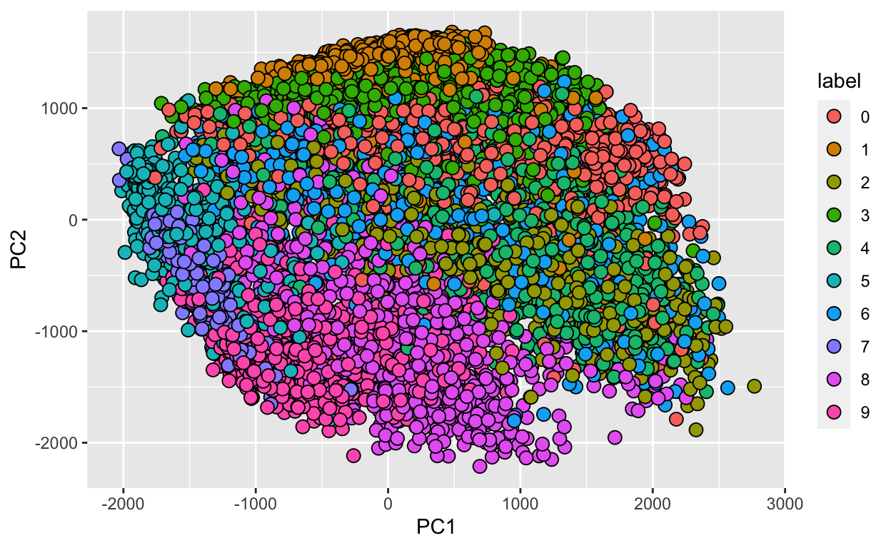

Pre-lecture materials
Read ahead
Before class, you can prepare by reading the following materials:
Acknowledgements
Material for this lecture was borrowed and adopted from
- An Introduction to Statistical Learning, 2013 by James, Witten, Hastie and Tibshirani
- The dsbook from Rafael Irizarry
Learning objectives
At the end of this lesson you will:
Motivation
In the previous lectures, we have learned about machine learning algorithms, where decisions made are based on algorithms built on data. The data we have often comes in the form of an outcome we want to predict and the features that we will use to predict the outcome. This setting is often called a supervised learning (as opposed to the unsupervised learning setting without an outcome variable, such as clustering or dimensionality reduction).
The general idea of supervised learning is that we build the algorithm using the data that includes the outcome so that in the future we can predict the outcome only using the features. Here we will use \(Y\) to denote the outcome and \(X_1, \dots, X_p\) to denote features.
Note: the features are sometimes referred to as predictors or covariates and the outcome is sometimes referred to as a response variable.
If the outcome \(Y\) is quantitative, something like linear regression is very useful for predicting a quantitative response. But in many situations, the responsible variable is qualitative (or categorical).
Predicting a qualitative response \(Y\) is referred to as classification since it involves assigning each observation to a category or class.
So the general set-up is as follows. Given a set of predictors \(X_{ij}\) and and qualitative outcome \(Y_i\), we can collect data to classify or predict which class or category each outcome (or observation) belongs in:
| outcome | feature_1 | feature_2 | feature_3 | feature_4 | feature_5 |
|---|---|---|---|---|---|
| Y_1 | X_1,1 | X_1,2 | X_1,3 | X_1,4 | X_1,5 |
| Y_2 | X_2,1 | X_2,2 | X_2,3 | X_2,4 | X_2,5 |
| Y_3 | X_3,1 | X_3,2 | X_3,3 | X_3,4 | X_3,5 |
| Y_4 | X_4,1 | X_4,2 | X_4,3 | X_4,4 | X_4,5 |
| Y_5 | X_5,1 | X_5,2 | X_5,3 | X_5,4 | X_5,5 |
| Y_6 | X_6,1 | X_6,2 | X_6,3 | X_6,4 | X_6,5 |
| Y_7 | X_7,1 | X_7,2 | X_7,3 | X_7,4 | X_7,5 |
| Y_8 | X_8,1 | X_8,2 | X_8,3 | X_8,4 | X_8,5 |
| Y_9 | X_9,1 | X_9,2 | X_9,3 | X_9,4 | X_9,5 |
| Y_10 | X_10,1 | X_10,2 | X_10,3 | X_10,4 | X_10,5 |
Three widely used linear classifiers
Today, we will focus on the three of the most widely used classifiers:
- Linear and Logistic regression
- Linear and Quadratic discriminant analysis
- \(K\)-nearest neighbors
You have already learned about other methods including, trees, random forests, and boosting. Next week, we will cover support vector machines.
Data
For this lecture, we will use the Fashion-MNIST dataset from Kaggle.
The motivating question is:
Can we build a classier to accurately classify images of pieces of clothing?
The data consists of a training set of 60,000 images and a test set of 10,000 examples. We will assume the test set is the only data available for the purposes of this lecture (mostly because it is 1/6 of the size of the training set!).
For example, we want to build a classifier to recognize this image as a pair of pants:

And the classifier should be able to recognize this image as shoe:
The fashion MNIST dataset contains a set of images of clothing or fashion pieces. Each observation \(Y_i\) is labeled one of the following:
0= T-shirt/top1= Trouser2= Pullover3= Dress4= Coat5= Sandal6= Shirt7= Sneaker8= Bag9= Ankle boot
The are images are converted into \(28 \times 28\) pixels and for each we obtain an gray scale intensity between 0 (white) to 256 (black).
We will explore this data set using some common machine learning algorithms for classification.
Data import
First, we load a few R packages
The data are available in the /data folder of this repository.
First, lets read in the fashion-mnist_test.csv dataset using the read_csv() function in the readr package.
Here we save just pixels
And we also save the labels (i.e.0-9)
fashion_labels <-
fashion %>%
pull(label)
We can look at the first three images to see what they look like.
tmp <- lapply(c(1:3), function(i){
expand.grid(Row=1:28, Column=1:28) %>%
mutate(id=i, label=fashion$label[i],
value = unlist(fashion[i,-1])) })
tmp <- Reduce(rbind, tmp)
tmp %>% ggplot(aes(Row, Column, fill=value)) +
geom_raster() +
scale_y_reverse() +
scale_fill_gradient(low="white", high="black") +
facet_grid(.~label)
What are the features?
Each image is converted into \(28 \times 28\) pixels and for each we obtain an grey scale intensity between 0 (white) to 255 (black).
This means one image has 784 (=28*28) features.
We can see these values like this:
tmp %>% ggplot(aes(Row, Column, fill=value)) +
geom_point(pch=21,cex=2) +
scale_y_reverse() +
scale_fill_gradient(low="white", high="black") +
facet_grid(.~label)
We use bold face to denote this vector of predictors
\[ \mathbf{X}_i = (X_{i,1}, \dots, X_{i,784}) \]
Lets take a peek at \(\mathbf{X}\):
X[1:10, 1:10]
pixel1 pixel2 pixel3 pixel4 pixel5 pixel6 pixel7 pixel8 pixel9
[1,] 0 0 0 0 0 0 0 9 8
[2,] 0 0 0 0 0 0 0 0 0
[3,] 0 0 0 0 0 0 14 53 99
[4,] 0 0 0 0 0 0 0 0 0
[5,] 0 0 0 0 0 0 0 0 0
[6,] 0 0 0 0 0 44 105 44 10
[7,] 0 0 0 0 0 0 0 0 0
[8,] 0 0 0 0 0 0 0 1 0
[9,] 0 0 0 0 0 0 0 0 0
[10,] 0 0 0 0 0 0 0 0 0
pixel10
[1,] 0
[2,] 0
[3,] 17
[4,] 161
[5,] 0
[6,] 0
[7,] 0
[8,] 0
[9,] 0
[10,] 0What are the outcomes?
Even though the label here is a whole number between 0 and 10, this is a qualitative outcome (e.g.shirt, pants, shoes, etc).
fashion_labels[1:7]
[1] 0 1 2 2 3 2 8So for each image \(i\) we have an outcome \(Y_i\) which can be one of 10 categories: \(0,1,2,3,4,5,6,7,8,9\) and the features \(X_{i,1}, \dots, X_{i,784}\) which can take values from 0 to 255.
How does this related to machine learning?
The machine learning task here is to build a predictor function, \(f\) that converts \(\mathbf{X}\) into a prediction category \(\hat{Y}_i = f(\mathbf{X}_i)\) that minimizes the \(d(Y,\hat{Y})\)
Calculating the top PCs
If you recall, the first PC is will explain the most variation, the second PC will explain the second most variation in the data, etc.
Because the pixels are so small we expect those to be close to each other on the grid to be correlated, meaning that dimension reduction should be possible.
Lets take the SVD of \(\mathbf{X}\).
dim(X) # 10000 observation, 784 features
[1] 10000 784Remember, we need to column center the data. We also will create a new variable \(\mathbf{Y}\) to represent the standardized data that is also transposed (features along rows).
Now apply the svd() function to \(\mathbf{Y}\).
List of 3
$ d: num [1:784] 113672 89269 51516 47079 41325 ...
$ u: num [1:784, 1:784] -7.63e-08 -1.01e-05 -4.32e-05 -5.51e-05 -1.87e-04 ...
$ v: num [1:10000, 1:784] -0.012246 0.000349 0.007291 -0.006896 -0.00233 ...First note that we can in fact reconstruct \(\mathbf{Y}\) using all the PCs:
If we look at the eigenvalues in \(\mathbf{D}\), we see that the last few are quite close to 0.
plot(s$d)
This implies that the last columns of \(\mathbf{V}\) have a very small effect on the reconstruction of \(\mathbf{X}\). To see this, consider the extreme example in which the last entry of \(\mathbf{V}\) is 0. In this case the last column of \(\mathbf{V}\) is not needed at all.
Because of the way the SVD is created, the columns of \(\mathbf{V}\), have less and less influence on the reconstruction of \(\mathbf{X}\). You commonly see this described as explaining less variance. This implies that for a large matrix, by the time you get to the last columns, it is possible that there is not much left to explain.
As an example, we will look at what happens if we remove the 100 last columns:
k <- ncol(s$v)-100
Yhat <- s$u[,1:k] %*% diag(s$d)[1:k,1:k] %*% t(s$v[,1:k])
resid <- Y - Yhat
max(abs(resid))
[1] 182.8126The largest residual is practically 0, meaning that Yhat is practically the same as Y, yet we need 100 less dimensions to transmit the information.
By looking at \(\mathbf{D}\), we can see that, in this particular dataset, we can obtain a good approximation keeping only a subset of columns. The following plots are useful for seeing how much of the variability is explained by each column:
We can also make a cumulative plot:
Although we start with 784 dimensions, we can approximate \(X\) with just a few:
Therefore, by using only 100 dimensions, we retain most of the variability in our data:
We say that we explain 91 percent of the variability in our data with 100 PCs.
Note that we can compute this proportion from \(\mathbf{D}\):
The entries of \(\mathbf{D}\) therefore tell us how much each PC contributes in term of variability explained.
Another way of calculating the PCs is to use prcomp() function.
pc <- prcomp(X, center=TRUE)
The proportion of variance of the first ten PCs is quite high (almost 75%):
summary(pc)$importance[,1:10]
PC1 PC2 PC3 PC4
Standard deviation 1136.77538 892.73736 515.18167 470.80915
Proportion of Variance 0.29028 0.17903 0.05962 0.04979
Cumulative Proportion 0.29028 0.46931 0.52893 0.57872
PC5 PC6 PC7 PC8
Standard deviation 413.27284 391.59029 323.28114 287.81159
Proportion of Variance 0.03837 0.03445 0.02348 0.01861
Cumulative Proportion 0.61708 0.65153 0.67501 0.69361
PC9 PC10
Standard deviation 246.78152 242.84965
Proportion of Variance 0.01368 0.01325
Cumulative Proportion 0.70729 0.72054We can also plot the standard deviations:
plot(pc$sdev)
or the more common plot variance explained:
We can also see that the first two PCs will in fact be quite informative. Here is a plot of the first two PCs, but colored by the labels that we ignored:
data.frame(PC1 = pc$x[,1], PC2 = pc$x[,2],
label=factor(fashion_labels)) %>%
ggplot(aes(PC1, PC2, fill=label))+
geom_point(cex=3, pch=21)

We can also see the linear combinations on the grid to get an idea of what is getting weighted:
tmp <- lapply( c(1:4,781:784), function(i){
expand.grid(Row=1:28, Column=1:28) %>%
mutate(id=i, label=paste0("PC",i),
value = pc$rotation[,i])
})
tmp <- Reduce(rbind, tmp)
tmp %>% filter(id<5) %>%
ggplot(aes(Row, Column, fill=value)) +
geom_raster() +
scale_y_reverse() +
facet_wrap(~label, nrow = 1)
tmp %>% filter(id>5) %>%
ggplot(aes(Row, Column, fill=value)) +
geom_raster() +
scale_y_reverse() +
facet_wrap(~label, nrow = 1)
Data wrangling
For purposes of this lecture, we will focus only the 0s (tshirt/top) and 5s (sandals) observations:
Feature engineering
To distinguish 0s (shirts) from 5s (sandals), it might be enough to look at the number of non-white pixels in the upper-left and lower-right quadrants:
So we will define two features \(X_1\) and \(X_2\) as the percent of non-white pixels in these two quadrants, respectively. We add these two features to the dat05 table
row_column <- expand.grid(row=1:28, col=1:28)
ind1 <- which(row_column$col <= 14 & row_column$row <=14) # top left quandrant
ind2 <- which(row_column$col > 14 & row_column$row > 14) # bottom right quadrant
ind <- c(ind1,ind2)
X <- as.matrix(dat05[,-1]) # remove label column
X <- X>200
X1 <- rowSums(X[,ind1])/rowSums(X)
X2 <- rowSums(X[,ind2])/rowSums(X)
dat05 <- mutate(dat05, X_1 = X1, X_2 = X2,
y = ifelse(label=="0", 0, 1))
dat05 %>%
select(label, y, X_1, X_2)
# A tibble: 2,000 4
label y X_1 X_2
<fct> <dbl> <dbl> <dbl>
1 0 0 0.255 0.272
2 5 1 0 0.344
3 0 0 0.444 0
4 5 1 0 0.409
5 5 1 0.153 0.203
6 5 1 0 0.362
7 0 0 0.364 0.455
8 0 0 0.377 0.148
9 0 0 0.280 0.244
10 0 0 0.231 0.263
# with 1,990 more rowsExploratory data analysis
Lets explore the relationship between the predictors (or features) \(X_1\) and \(X_2\) and the outcome \(Y\):
dat05 %>%
select(label, X_1, X_2) %>%
ggplot(aes(x=label,y=X_1)) +
geom_boxplot()

We see a pronounced relationship between the the predictor \(X_1\) and the label (e.g.the \(X_1\) feature is high for the t-shirts and low for the sandals, which make sense).
dat05 %>%
select(label, X_1, X_2) %>%
ggplot(aes(x=label,y=X_2)) +
geom_boxplot()
In this case, we again see a difference in the distribution of \(X_2\) across the t-shirts and sandals, but less so. This is still likely to be informative.
Furthermore, we can also plot the relationship between \(X_1\) and \(X_2\) and see that there is separation between the 0s (t-shirts)and5`s (sandals):
dat05 %>%
select(label, X_1, X_2) %>%
ggplot(aes(x=X_1,y=X_2, color = label)) +
geom_point()
Create train_set and test_set
In this last step of data wrangling, we will split the dat05 dataset into two parts:
train_set= the dataset we will use to build the classifertest_set= the dataset we will use to assess how we are doing (not used to train the classifier)
For this we will use the createDataPartition() function in the caret package, which you have already learned about in the last lecture. We set the seed so we will all get the same answer
set.seed(123)
inTrain <- createDataPartition(y = dat05$label,
p=0.5)
train_set <- slice(dat05, inTrain$Resample1)
test_set <- slice(dat05, -inTrain$Resample1)
Linear methods for classification
Linear regression
One approach would be to just try using simple linear regression.
This assumes that:
\[f(x) = \mbox{Pr}( Y = 1 | X_1=x_1, X_2 = x_2) = \beta_0 + \beta_1 x_1 + \beta_2 x_2\]
and we estimate \(\beta_0\), \(\beta_1\), \(\beta_2\) with least squares. Once we have estimates \(\hat{\beta}_0\), \(\hat{\beta}_1\), and \(\beta_2\) we can obtain an actual prediction rule:
\[ \hat{f}(x) = \hat{\beta}_0+ \hat{\beta}_1 x_1 + \hat{\beta}_2 x_2 \]
The problem with using linear regression is that to predict \(Y\) on the basis of predictors \(\mathbf{X}_i\), we will need to order the outcomes.
Does it make sense here? Not quite. Why?
If \(Y\) is not quantiative (e.g.ten types of fashion pieces), it doesnt quite make sense to put a t-shirt ahead of a sandal or behind a pants. This is because to use linear regression, we have to decide on an ordering and if we picked a differentordering, then that coding would produce a fundamentally different linear model with a different set of predictions on the test observations.
However, if the response variables values did take on a natural ordering, such as mild, moderate, and severe, and we felt the gap between mild and moderate was similar to the gap between moderate and severe, then a 1, 2, 3 coding would be reasonable.
Unfortunately, in general there is no natural way to convert a qualitative response variable with more than two levels into a quantitative response that is ready for linear regression.
Logistic regression
If the qualitative response is binary (0 and 1), then one approach is to fit a linear regression to this binary response and predict 1 if the predicted response (\(\hat{Y}\)) is \(\hat{Y} > 0.5\) or 0 otherwise.
So if we consider our linear regression model above:
\[f(x) = \mbox{Pr}( Y = 1 | X_1=x_1, X_2 = x_2) = \beta_0 + \beta_1 x_1 + \beta_2 x_2\]
We note that the expression on the right can be any real number while the expression on the left is bounded between 0 and 1.
An extension that permits us to continue using regression-like models is to apply transformations that eliminate this disconnect. In the case of binary data the most common approach is to fit a logistic regression model which makes use of the logit transformation:
\[ g(p) = \log \frac{p}{1-p}\] and use this model instead:
\[ g(\mbox{Pr}(Y=1 \mid X_1=x_1 , X_2 = x_2) = \beta_0 + \beta_1 x_1 + \beta_2 x_2\]
We can fit a logistic regression model using the glm() function with the family="binomial" argument.
fit_glm <- glm(y ~ X_1, X_2, data = select(train_set, y, X_1, X_2),
family = "binomial")
summary(fit_glm)
Call:
glm(formula = y ~ X_1, family = "binomial", data = select(train_set,
y, X_1, X_2), weights = X_2)
Deviance Residuals:
Min 1Q Median 3Q Max
-2.4749 -0.1421 0.0000 0.2200 2.5372
Coefficients:
Estimate Std. Error z value Pr(>|z|)
(Intercept) 3.0146 0.3234 9.321 <2e-16 ***
X_1 -21.2373 2.3318 -9.108 <2e-16 ***
---
Signif. codes: 0 '***' 0.001 '**' 0.01 '*' 0.05 '.' 0.1 ' ' 1
(Dispersion parameter for binomial family taken to be 1)
Null deviance: 343.43 on 818 degrees of freedom
Residual deviance: 161.91 on 817 degrees of freedom
AIC: 83.613
Number of Fisher Scoring iterations: 6We see both the \(X_1\) and \(X_2\) features are statisticially significant at the \(\alpha = 0.05\) level.
Next, if we predict or classify how each observation \(Y_i\) is doing using the predict()
pred_glm <- predict(fit_glm, newdata = test_set, type="response")
y_hat_glm <- factor(ifelse(pred_glm > 0.5, 1, 0))
tab <- table(pred=y_hat_glm, truth= test_set$y)
conf_matrix <- confusionMatrix(tab)
conf_matrix
Confusion Matrix and Statistics
truth
pred 0 1
0 446 50
1 54 450
Accuracy : 0.896
95% CI : (0.8754, 0.9142)
No Information Rate : 0.5
P-Value [Acc > NIR] : <2e-16
Kappa : 0.792
Mcnemar's Test P-Value : 0.7686
Sensitivity : 0.8920
Specificity : 0.9000
Pos Pred Value : 0.8992
Neg Pred Value : 0.8929
Prevalence : 0.5000
Detection Rate : 0.4460
Detection Prevalence : 0.4960
Balanced Accuracy : 0.8960
'Positive' Class : 0
The confusion table can be extracted using the $table slot
conf_matrix$table
truth
pred 0 1
0 446 50
1 54 450And the various performance metrics too:
conf_matrix$overall["Accuracy"]
Accuracy
0.896 We can also use the roc() function in the pROC package to plot the ROC curve comparing the sensitivity and specificity
Logistic regression for more than 2 response classes
In our example, we only considered the t-shirts and sandals, but we technically have more than two classes. If the goal is to classify a response variable or outcome with more than two clasess, there are multiple-class extensions. However, in practice they tend not to be used all that often. One of the reasons is that the method we discuss in the next section, discriminant analysis, is popular for multiple-class classification. So we do not go into the details of multiple-class logistic regression here, but simply note that such an approach is possible, and that software for it is available in R.
Linear discriminant analysis
Logistic regression involves directly modeling \(Pr(Y = k|X = x)\) using the logistic function, for the case of two response classes. An alternative and less direct approach to estimate these probabilities is to model the distribution of the predictors \(X\) separately in each of the response classes (i.e.given \(Y\) ), and then use Bayes theorem to flip these around into estimates for \(Pr(Y = k|X = x)\).
When these distributions are assumed to be normal, it turns out that the model is very similar in form to logistic regression.
Why do we need another method, when we have logistic regression? There are several reasons:
- When the classes are well-separated, the parameter estimates for the logistic regression model are surprisingly unstable. Linear discriminant analysis does not suffer from this problem.
- If \(n\) is small and the distribution of the predictors \(X\) is approximately normal in each of the classes, the linear discriminant model is again more stable than the logistic regression model.
- Linear discriminant analysis is popular when we have more than two response classes.
Ok, lets assume we have \(K\) classes (\(K \geq2\)). Let \(\pi_k\) represent the overall or prior probability that a randomly chosen observation comes from the \(k^{th}\)class or category of the response variable \(Y\).
Let \(f_{k}(X) Pr(X = x|Y = k)\) denote the density function of \(X\) for an observation that comes from the \(k^{th}\) class (i.e.\(f_{k}(x)\) is relatively large if there is a high probability that an observation in the \(k^{th}\) class has \(X \approx x\), and \(f_{k}(x)\) is small if it is very unlikely. Then Bayes theorem states that
\[ \mbox{Pr}(Y=k|X=x) = \frac{\pi_k f_{k}(x)}{\sum_{l=1}^K \pi_l f_{l}(x)} \]
So instead of directly computing \(\mbox{Pr}(Y=1|X=x)\) (i.e.if \(K=2\)) in logistic regression, we can plug in estimates for \(\pi_k\) and \(f_{k}(x)\). To do this, we make some assumptions the distributions of \(f_{k}(x)\), namely that they are multivariate normal. LDA assumes that the observations within each class are drawn from a multivariate Gaussian distribution with a class-specific mean vector and a covariance matrix that is common to all \(K\) classes. In our case we have two predictors (\(X_1\) and \(X_2\)), so we assume each one is bivariate normal. This implies we need to estimate two averages, one standard deviation, and a correlation for each case \(Y=1\) and \(Y=0\).
This implies that we can approximate the distributions \(f_{0}(X_1, X_2)\) and \(f_{1}(X_1, X_2)\). We can easily estimate parameters from the data:
# A tibble: 2 3
y avg_1 avg_2
<dbl> <dbl> <dbl>
1 0 0.303 0.174
2 1 0.0418 0.377# A tibble: 1 2
sd r
<dbl> <dbl>
1 0.211 -0.575So here are the data and contour plots showing the two normal densities:
train_set %>% mutate(y = factor(y)) %>%
ggplot(aes(X_1, X_2, fill = y, color=y)) +
geom_point(pch=21,cex=5, color="black") +
stat_ellipse(lwd=2, type="norm")
We use the lda() function in the MASS R package. The prior argument represents the prior probability of class membership.
fit_lda <- MASS::lda(y ~ ., data=dplyr::select(train_set, y, X_1, X_2),
prior = c(1,1)/2)
pred_lda <- MASS:::predict.lda(fit_lda, test_set)$class
tab <- table(pred=pred_lda, truth= test_set$y)
conf_matrix <- confusionMatrix(tab)
conf_matrix$table
truth
pred 0 1
0 425 41
1 75 459conf_matrix$overall["Accuracy"]
Accuracy
0.88 Quadratic discriminant analysis
As we have discussed, LDA assumes that the observations within each class are drawn from a multivariate Gaussian distribution with a class-specific mean vector and a covariance matrix that is common to all \(K\) classes.
Quadratic discriminant analysis (QDA) assumes that the observations from each class are again drawn from a Gaussian distribution and you plug in estimates for the parameters into Bayes theorem in order to perform prediction. However, unlike LDA, QDA assumes that each class has its own covariance matrix. That is, it assumes that an observation from the kth class is of the form \(X \sim N(\mu_k,\Sigma_k)\), where \(\Sigma_k\) is a covariance matrix for the kth class.
In our case we have two predictors (\(X_1\) and \(X_2\)), so we assume each one is bivariate normal. This implies we need to estimate two averages, two standard deviations, and a correlation for each case \(Y=1\) and \(Y=0\).
This implies that we can approximate the distributions \(f_{0}(X_1, X_2)\) and \(f_{1}(X_1, X_2)\). We can easily estimate parameters from the data:
options(digits = 2)
params <- train_set %>% group_by(y) %>%
summarize(avg_1 = mean(X_1), avg_2 = mean(X_2),
sd_1= sd(X_1), sd_2 = sd(X_2),
r = cor(X_1,X_2))
params
# A tibble: 2 6
y avg_1 avg_2 sd_1 sd_2 r
<dbl> <dbl> <dbl> <dbl> <dbl> <dbl>
1 0 0.303 0.174 0.166 0.143 -0.599
2 1 0.0418 0.377 0.0946 0.219 -0.234So here are the data and contour plots showing the two normal densities:
train_set %>% mutate(y = factor(y)) %>%
ggplot(aes(X_1, X_2, fill = y, color=y)) +
geom_point(pch=21,cex=5, color="black") +
stat_ellipse(lwd=2, type="norm")

We can use the qda() function in the MASS R package. The prior argument represents the prior probability of class membership.
fit_qda <- MASS::qda(y ~ ., data=select(train_set, y, X_1, X_2),
prior = c(1,1)/2)
pred_qda <- MASS:::predict.qda(fit_qda, test_set)$class
tab <- table(pred=pred_qda, truth= test_set$y)
conf_matrix <- confusionMatrix(tab)
conf_matrix$table
truth
pred 0 1
0 438 47
1 62 453conf_matrix$overall["Accuracy"]
Accuracy
0.89 Why does it matter if we assume a common covariance matrix?
In other words, why would one prefer LDA to QDA, or vice-versa? The answer is the bias-variance trade-off. When there are \(p\) predictors, then estimating a covariance matrix requires estimating \(p(p+1)/2\) parameters. QDA estimates a separate covariance matrix for each class, for a total of \(Kp(p+1)/2\) parameters. With 50 predictors this is some multiple of 1,225, which is a lot of parameters. By instead assuming that the \(K\) classes share a common covariance matrix, the LDA model becomes linear in x, which means there are \(Kp\) linear coefficients to estimate.
Consequently, LDA is a much less flexible classifier than QDA, and so has substantially lower variance. This can potentially lead to improved prediction performance. But there is a trade-off: if LDAs assumption that the \(K\) classes share a common covariance matrix is badly off, then LDA can suffer from high bias.
Roughly speaking, LDA tends to be a better bet than QDA if there are relatively few training observations and so reducing variance is crucial. In contrast, QDA is recommended if the training set is very large, so that the variance of the classifier is not a major concern, or if the assumption of a common covariance matrix for the \(K\) classes is clearly untenable.
\(K\)-nearest neighbors
A model free alternative is the \(K\)-nearest neighbor classifier (KNN). Given a positive integer \(K\) and a test observation \(x_0\), the KNN classifier first identifies the \(K\) points in the training data that are closest to \(x_0\), represented by \(N_0\). It then estimates the conditional probability for class \(k\) as the fraction of points in \(N_0\) whose response values equal \(k\):
\[\mbox{Pr}( Y = k | \mathbf{X} =\mathbf{x}_0) = \frac{P(Y = k, \mathbf{X} = \mathbf{x}_0)}{P(\mathbf{X} = \mathbf{x}_0)} = \frac{1}{K} \sum_{i \in N_0} I(y_i = k)\]
Finally, KNN applies Bayes rule and classifies the test observation \(x_0\) to the class with the largest probability.
Despite the fact that it is a very simple approach, KNN can often produce classifiers that are surprisingly close to the optimal Bayes classifier.
fit_knn_2 <- knn3(y~., data = select(train_set, y, X_1, X_2),
k=2)
pred_knn_2 <- predict(fit_knn_2, newdata = test_set)[,2]
tab <- table(pred=round(pred_knn_2), truth= test_set$y)
conf_matrix <- confusionMatrix(tab)
conf_matrix$table
truth
pred 0 1
0 462 79
1 38 421conf_matrix$overall["Accuracy"]
Accuracy
0.88 Note: The choice of \(K\) has a drastic effect on the KNN classifier obtained. You can explore this own your own by trying \(K\) = 1 vs a larger \(K\).
Post-lecture materials
Final Questions
Here are some post-lecture questions to help you think about the material discussed.
Questions:
Additional Resources